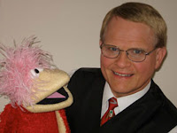

Professional Kid Show Mentoring
11/30/2009
{kind=link}

Mark Wade tells me he is now offering professional mentoring for kidshow ventriloquists. What an amazing opportunity. Learn from the pro! The program is for three days and is a special one-on-one program where Mark teaches the specifics of what the individual being mentored wants to know. After an interview with them on the phone, in person, or by email, they jointly decide on the program course. Marks then set up the program so they can go to Grove City, Ohio and go out on several shows with Mark. This allows one-on-one talk about what they have seen and why Mark does it the way he does.
After the shows they have intense learning sessions and the "student" has Mark's undivided attention for three days. How fantastic such a training opportunity! The price is discussed when the interested parties contact Mark. It's a fun three days of learning and on the job training, something never offered to the vent community before in quite this manner. Now is the time to capitalize on Mark's years of knowledge and experience. If you want to make yourself a better kidshow vent, contact Mark now while he's willing to spill his success secrets!
kidshowvent@roadrunner.com
After the shows they have intense learning sessions and the "student" has Mark's undivided attention for three days. How fantastic such a training opportunity! The price is discussed when the interested parties contact Mark. It's a fun three days of learning and on the job training, something never offered to the vent community before in quite this manner. Now is the time to capitalize on Mark's years of knowledge and experience. If you want to make yourself a better kidshow vent, contact Mark now while he's willing to spill his success secrets!
kidshowvent@roadrunner.com